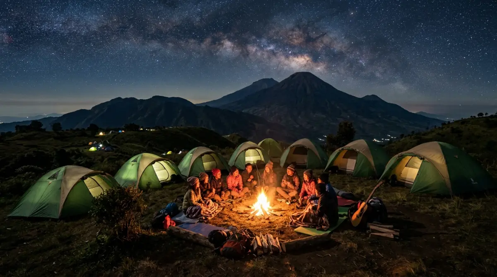
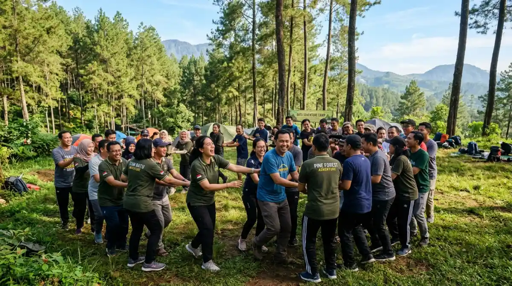

Camping kemah adalah investasi nyata untuk membangun karakter dan kekompakan tim yang solid di luar tembok kantor.Pernahkah kamu merasa suasana di kantormu atau komunitasmu makin hari makin terasa dingin? Orang-orang datang, bekerja menatap layar, lalu pulang tanpa benar-benar berinteraksi. Komunikasi hanya sebatas urusan deadline di grup WhatsApp, dan kalau ada masalah, budaya saling lempar tanggung jawab antar divisi jadi makanan sehari-hari.
Kalau ini dibiarkan, jangan kaget kalau lambat laun turnover meningkat tajam karena anggota tim merasa tidak punya ikatan emosional satu sama lain. Kamu mungkin berpikir sesi makan siang bersama atau gathering di restoran sudah cukup untuk merekatkan mereka. Sayangnya, memori kebersamaan yang kuat jarang tercipta di dalam zona nyaman.
Untuk mengembalikan percikan kebersamaan itu sebelum semuanya terlambat, kamu butuh sesuatu yang lebih berdampak. Di sinilah metode camping kemah hadir sebagai solusi cerdas. Ini bukan sekadar liburan pindah tidur, melainkan investasi nyata untuk membangun karakter dan kekompakan tim yang solid.
Dalam dinamika dunia kerja atau organisasi di Indonesia saat ini, tuntutan untuk bergerak serba cepat sering kali mengorbankan sisi humanis dari sebuah tim. Kita sibuk mengejar KPI, merespons pesan klien di luar jam kerja, hingga lupa bahwa rekan kerja di meja sebelah juga seorang manusia yang butuh apresiasi dan ruang untuk berkolaborasi tanpa tekanan.
Ketika kepenatan ini memuncak, banyak panitia HRD yang buru-buru merancang acara outing. Sayangnya, sekadar menginap di vila mewah sering kali tidak menyelesaikan akar masalah. Anggota tim cenderung kembali membentuk kelompok-kelompok kecil asyiknya sendiri, dan pada akhirnya, tujuan untuk menyatukan seluruh anggota gagal total.
Kenapa Harus Pilih "Camping Kemah" untuk Acara Tim?
Membawa puluhan bahkan ratusan orang keluar dari rutinitas gedung bertingkat ke ruang terbuka hijau bukanlah sekadar ajang rekreasi. Secara psikologis, alam bebas memiliki cara unik untuk menanggalkan jabatan dan ego sektoral.
Mengikis Ego Sektoral Lewat Kehidupan Alam
Di kantor, kamu mungkin seorang manajer yang terbiasa memberi perintah, atau seorang staf IT yang jarang bicara dan hanya fokus pada barisan kode. Namun, ketika dihadapkan pada situasi camping kemah, semua label itu lebur. Alam tidak peduli dengan seberapa tinggi jabatanmu.
Bayangkan sebuah situasi di mana tim harus mendirikan tenda dome bersama sebelum hujan turun. Sang manajer mungkin kesulitan memasang pasak, sementara staf junior yang kebetulan mantan anak pramuka ternyata sangat cekatan mengatur rangka tenda. Di momen inilah terjadi pertukaran peran yang sehat. Ketergantungan satu sama lain secara alami meruntuhkan tembok pembatas antar departemen.
Kalau di kantor mereka sering adu argumen soal budget atau revisi desain, di area perkemahan mereka harus sepakat soal siapa yang mengambil air dan siapa yang menjaga api unggun. Pengalaman komunal inilah yang pelan-pelan membangun empati yang selama ini tertutup oleh rutinitas korporat.
Keluar dari Zona Nyaman, Masuk ke Zona Kolaborasi
Karakter asli seseorang biasanya akan muncul ketika mereka berada di luar zona nyaman. Berbeda dengan tidur di kasur hotel yang serba tersedia, tidur di dalam tenda menuntut adaptasi. Udara dingin pegunungan dan fasilitas yang harus digunakan bergantian melatih kesabaran dan toleransi.
Proses beradaptasi ini sangat relevan dengan dunia kerja. Saat perusahaan menghadapi krisis atau project dadakan dengan tenggat waktu yang mepet, tim yang sudah pernah diuji lewat kerasnya (namun serunya) kegiatan alam biasanya lebih tangguh. Mereka terbiasa mencari solusi bersama tanpa panik, sama seperti saat mereka mencari cara agar kayu bakar yang lembap tetap bisa menyala untuk menghangatkan tubuh di malam hari.
Elemen Penting dalam Camping Kemah yang Sukses
Tentu saja, sekadar memindahkan orang ke tengah hutan tidak akan otomatis membuat mereka kompak. Diperlukan rancangan kegiatan yang terstruktur dan dieksekusi oleh fasilitator yang mengerti dinamika kelompok.
Outbound dan Team Building yang Terarah
Kegiatan inti dari sebuah camping kemah edukatif adalah sesi outbound. Namun, pastikan permainannya bukan sekadar lomba lari karung atau tarik tambang biasa. Permainan harus memiliki muatan problem solving. Misalnya, permainan blindfold walk di mana satu orang yang matanya ditutup harus dipandu oleh rekannya untuk melewati rintangan.
Analogi dari permainan ini sangat lekat dengan rasa saling percaya (trust) di tempat kerja. Bagaimana seorang anggota tim bisa mendelegasikan tugas penting jika ia tidak percaya pada rekan kerjanya? Lewat permainan semacam ini, komunikasi efektif diuji. Fasilitator yang profesional biasanya akan memberikan sesi debriefing setelah permainan selesai, membedah apa saja kendala komunikasi yang terjadi dan bagaimana mengaplikasikan solusinya kembali ke meja kerja.

Permainan outbound yang terstruktur adalah inti dari camping kemah yang sukses untuk membangun kekompakan tim.Malam Keakraban Tanpa Distraksi Gadget
Salah satu "penyakit" manusia modern adalah tidak bisa lepas dari layar ponsel. Dalam kegiatan kemah yang terorganisir, ada satu aturan tidak tertulis yang sangat krusial: kurangi penggunaan gadget, terutama saat malam keakraban.
Ketika api unggun dinyalakan di tengah dataran tinggi yang sejuk, inilah panggung utama untuk saling mengenal. Tanpa adanya notifikasi email atau scroll media sosial tanpa ujung, anggota tim "dipaksa" untuk saling bertatap muka, mengobrol secara mendalam (deep talk), atau sekadar bernyanyi bersama diiringi petikan gitar. Di momen ini, keluh kesah yang selama ini dipendam sering kali cair menjadi tawa bersama. Kehangatan inilah yang nantinya akan terbawa kembali ke ruang rapat di hari Senin.
"Tim yang kompak bukan dibangun di ruang rapat, tapi di sekitar api unggun di mana semua orang setara, berbagi kehangatan yang sama."
— Filosofi Team Building OutdoorPersiapan Panitia: Memilih Lokasi Dataran Tinggi yang Tepat
Bagi kamu yang ditunjuk menjadi panitia, tugas pertamamu adalah memilih lokasi yang representatif. Keamanan dan kenyamanan dasar tetap harus menjadi prioritas, meskipun temanya adalah kembali ke alam.
Kawasan dataran tinggi di Jawa Timur seperti Kota Batu atau Malang sering kali menjadi pilihan favorit yang sangat ideal. Mengapa? Karena topografinya menawarkan udara sejuk yang sempurna untuk kegiatan fisik, pemandangan sunrise yang memukau untuk relaksasi mental, namun secara infrastruktur sudah sangat siap menerima rombongan besar.
Banyak pengelola perkemahan di area ini yang sudah menyediakan fasilitas lengkap mulai dari lapangan rumput luas untuk outbound, toilet bersih yang memadai, hingga dukungan logistik makanan. Memilih lokasi yang tepat tidak hanya mempermudah kerja panitia, tapi juga memastikan keselamatan peserta selama berkegiatan di alam bebas.
Membangun tim yang solid dan berkarakter kuat bukanlah sebuah kebetulan yang jatuh dari langit; itu adalah hasil dari usaha yang disengaja. Jangan menunggu sampai suasana kerja menjadi sepenuhnya beracun (toxic) atau sampai aset berhargamu memilih resign karena merasa tidak ada lagi rasa kekeluargaan.
Rencanakanlah kegiatan camping kemah untuk organisasimu sekarang. Berikan mereka kesempatan untuk tertawa, berkeringat, dan berjuang bersama di alam terbuka. Keputusan kecilmu hari ini untuk mengagendakan kegiatan di alam bisa menjadi titik balik yang menyelamatkan produktivitas dan kebahagiaan timmu di masa depan.
FAQ — Camping Kemah Team Building